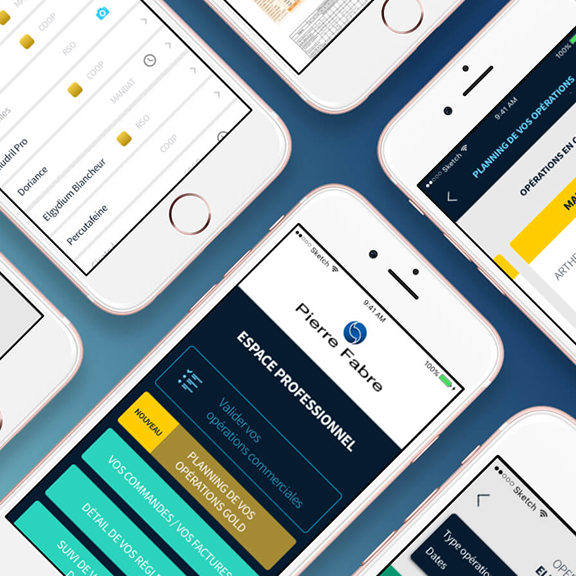

Pierre Fabre
Laboratoires Pierre Fabre — Espace Pro B2B
1ᵉʳ Product Manager · 2011 – 2017
Réinventer la relation entre le Laboratoire et ses 16 000 pharmacies clientes.
Contexte
Les équipes d'Administration des Ventes des Laboratoires Pierre Fabre maintiennent un contact permanent avec les pharmacies françaises clientes. Pour améliorer la fluidité et l'efficacité de cette relation, Pierre Fabre a créé une plateforme servant de centre névralgique relationnel entre le siège, les marques, les fonctions supports, les commerciaux et les pharmaciens.
Premières fonctionnalités lancées en septembre 2015.
Mission
Au-delà du lancement initial, les enjeux étaient de :
- Augmenter la visibilité de la plateforme auprès de tous les pharmaciens
- Optimiser l'utilisation des services proposés
- Intégrer continuellement de nouveaux services (commande en ligne, gestion des factures, e-learning, e-merchandising, retours produits)
Périmètre — 4 phases
Explorer
- Stratégie globale du service (nom, identité, positionnement)
- Ateliers réguliers avec les pharmaciens
- Sessions collaboratives avec marques, supports, commerciaux
- Veille et innovation permanentes
Concevoir
- Wireframes et prototypes fonctionnels
- Création d'éléments de design (logos, maquettes)
- Plan de médiatisation des services
- Plan d'animation des cibles internes et externes
Réaliser
- Rédaction des cahiers des charges
- Mise en place d'appels d'offres
- Coordination des équipes de production
- Pilotage, reporting et suivi des avancées
Grandir
- Dashboard de suivi des indicateurs clés
- Communication, acquisition et onboarding
- Amélioration continue
- Intégration de nouveaux services et de populations tierces
Résultats
- 80 % des pharmaciens clients connectés sur la plateforme au moins 1× par semaine
- 3 heures gagnées par semaine pour les pharmaciens utilisateurs
- Adoption B2B sur laquelle la stratégie digitale Pierre Fabre s'est ensuite appuyée
